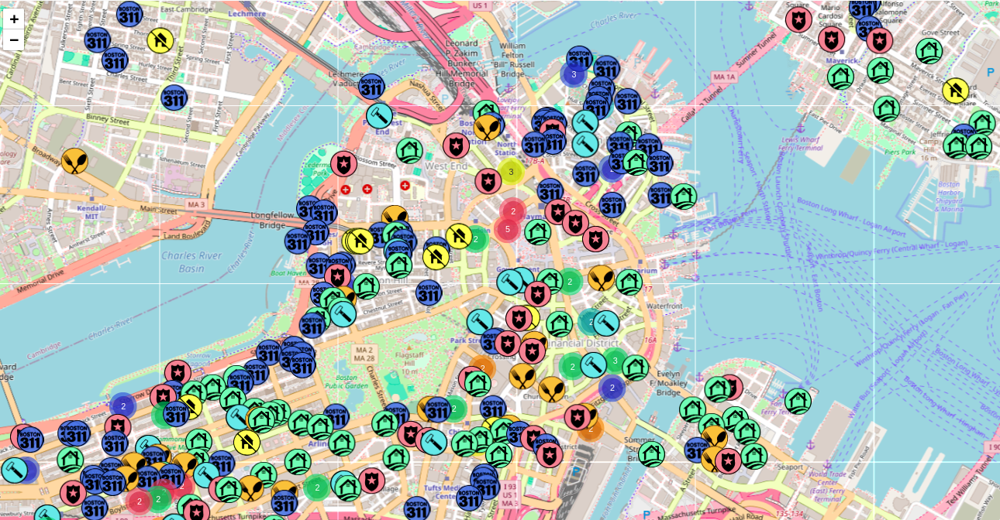

BostonScope
Your City, Unveiled. Explore Boston through data.
BostonScope provides comprehensive, up-to-date information on happenings in your neighborhood and across the city. From safety alerts to development news, stay informed with our powerful mapping and data tools.
5K+
Daily Updates
24/7
Real-time Data
100%
Transparency

Powerful Features at Your Fingertips
- Interactive Maps & Data Visualization
- Natural Language Queries
- Customizable Date & Type Filters
- Saved Locations & Personalized Views
- Detailed Data Metrics & History
- Multi-Lingual Support
Discover Boston like never before!
Stay Aware: Crime Data & Safety Insights
Access detailed crime reports, see incident locations on an interactive map, and filter by date or type. BostonScope helps you understand safety trends in your areas of interest.


QR Code Here
bostonscope.com